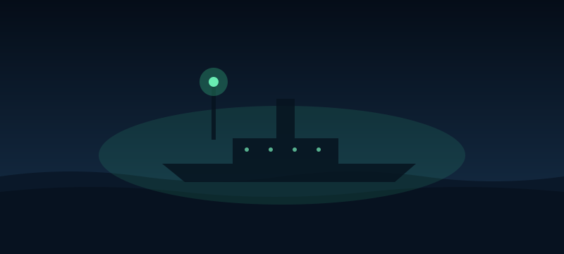

Ending: The Ghost Ship

You aim your signal at the green steamer and flash it three times, slowly, the way the logbook sketch was drawn. The steamer answers once. Then it swings its bow to the north and slides past the reef without a single sound, no engine, no wake slap, nothing. As it goes, the water in front of the fishing boat flattens right out, and the little boat follows it straight through the gap in the rocks. By sunrise the steamer is gone and the sea is empty. The fishing crew tell everyone a big ship led them in, and nobody believes a word of it except you.
THE END